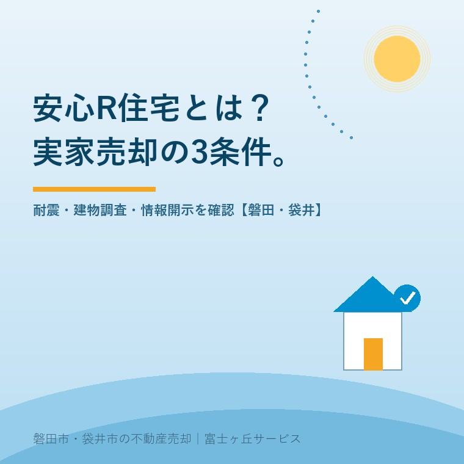

2026年9月2日｜カテゴリ：実家売却／中古住宅／インスペクション

この記事の要点
Q. 安心R住宅とは何ですか。親の家を売るとき、選んだほうがいいですか。
A. 安心R住宅は、耐震性と建物調査、リフォーム情報、点検記録という3条件を整え、許諾を受けた事業者が表示する中古住宅です。国が一軒ずつ認定する制度ではありません。調査費、修繕費、売値への反映を比べ、現状で売る選択も残して決めます。
磐田市・袋井市・森町では、介護施設の運営から不動産事業を始めた富士ヶ丘サービスのような「介護×不動産」専門の会社に相談するという選択肢があります。
施設入居で親の家が空いたとき、「古い家」という一言だけで売り出すと、買主には中の状態が見えません。売主側も、どこまで直せばよいか分からない。安心R住宅は、その分からなさを減らすための表示です。
国土交通省は2026年5月29日、制度の概要と実施状況を更新しました。この記事では同省の公式ページと資料を2026年9月2日に確認しています。正式名称は「特定既存住宅情報提供事業者団体登録制度」です。
国土交通省によると、安心R住宅調査報告書の提出件数は2026年3月末で累計1万3,155件です。これは売買の成約数ではなく、国が一軒ずつ検査した件数でもありません。
2018年4月に標章の使用が始まってから8年。中古住宅の広告で「不安」「汚い」「わからない」という印象を減らすため、次の3条件をそろえます。
| 条件 | 売主側で確認する内容 |
|---|---|
| 1. 基礎的な品質 | 新耐震基準等に適合。インスペクションで構造上の不具合と雨漏りが認められず、既存住宅売買瑕疵保険の検査基準に適合する。 |
| 2. リフォーム情報 | リフォーム済み、または費用情報を含む提案書がある。外装、主な内装、水回りの現況写真も見られる。 |
| 3. 点検記録等の情報 | 建築時、維持保全、保険・保証、省エネルギーなどの書類があるかを示し、求めに応じて詳細を開示する。 |
意外に思われるのは、リフォーム工事が必須ではない点です。工事をしていない家でも、費用を含む提案を付ければ2番目の条件を整えられます。買主へ工事を強制する条件にもできません。
一方、1番目の条件は広告の飾りでは済みません。耐震性とインスペクションの確認が要ります。1981年以前の建物で使える確認方法は、中古住宅の築年数と耐震基準の見方で整理しています。
安心R住宅は、国土交通省が個々の家へ「安全」とお墨付きを与える制度ではありません。国は事業者団体を登録し、団体の構成員が要件を確認して標章を表示します。
2026年5月29日時点の登録団体は11団体です。登録団体は独自のリフォーム判断基準と事業者ルールを設け、構成員を指導します。売主や仲介事業者は研修などの手続を経て許諾を受け、要件を満たす住宅の広告に標章を使います。
団体名のない標章は、安心R住宅ではありません。広告には許諾元の登録団体名を併記します。「国土交通省認定物件」と受け取らせる表示も認められていません。依頼先が団体の構成員か、団体の公式サイトで確認できます。
標章が示す範囲にも線があります。将来の無事故、地盤、給排水、シロアリ、現行法令への完全な適合までを一括で保証するものではありません。調査で把握した不具合を売買契約へどう反映するかは、契約不適合責任とインスペクションの記事も確認してください。
安心R住宅の良い点は、築年数だけでは分からない建物状態と資料の有無を、買主が比較できる形へ変えられることです。古い家を新しく見せる仕組みではありません。
売主にとっても、調査結果、修繕履歴、残っている図面を先に出せれば、内覧後の質問へ答えやすくなります。買主が直す場所を想像しやすくなり、売主が直さない部分も説明できます。販売図面へ情報をどう載せるかは、売主も見る販売図面の作り方で具体化しています。
その上で注文したい点があります。「安心」という短い言葉が、保証の範囲を大きく見せやすいことです。標章だけを先に見せず、調査日、確認できた範囲、未確認部分、リフォーム提案の金額まで同じ画面で示す。私はそこまで出して、初めて買主の判断材料になると考えます。
安心R住宅だから高く売れる、早く売れるとは言い切れません。指定の一次資料にも、その保証はありません。価格は立地、接道、土地形状、建物状態、地域の需要で変わります。
実家を安心R住宅として売るかは、標章を付けられるかだけで決めません。現状売却、条件を整えた売却、解体後の土地売却を同じ表で比べます。
私はこう案内します。今すぐ安心R住宅にすると決めなくてよい。調査にいくらかかり、直すと手取りがいくら変わり、誰が書類を集めるのか。その3列が埋まるまで、まだ決めない自由を残します。
私は、標章の取得を先に勧めるべきか迷います。空き家の傷みが進むなら、調査は早い方がよい。一方、遠方のご家族へ資料集めと工事を一度に求めれば、売却そのものが止まります。まず書類と費用だけをそろえ、決断はご家族に残す。私はそう考えます。
磐田市・袋井市の実家で2026年9月2日に始められる作業は、建物関係の書類を一箱に集めることです。耐震診断や工事の依頼より先に、残っている情報を確かめます。
書類がないこと自体も情報です。「たぶん直した」で済ませず、不明と表示する。分からない部分を分からないまま出す方が、後から話が変わるより安全です。
今日の確認は、書類箱の写真を撮り、仲介会社へ「安心R住宅の表示は扱えますか」と1通送ることです。売るか、貸すか、直すかは、その返事と費用を見てから決められます。
建築年だけで対象外とは決まりません。ただし、新耐震基準等への適合と、インスペクションで構造上の不具合や雨漏りが認められず、既存住宅売買瑕疵保険の検査基準に適合することが必要です。耐震診断や補強の要否、費用は建築士へ確認し、登録団体の許諾事業者にも対象要件を確認してください。
高値や早期成約を保証する制度ではありません。耐震性、調査結果、リフォーム情報、点検記録を見える形にし、買主が判断しやすくする仕組みです。売値は立地、接道、土地形状、建物状態、需要にも左右されます。標章に必要な費用と、査定額への反映を同じ表で比べてください。
依頼予定の仲介会社が登録団体の構成員で、標章の使用許諾を得ているか確認してください。次に、建築確認書類、点検記録、修繕履歴、写真を集め、耐震性とインスペクションの確認費用を見積もります。現状売却の査定と、条件を整えた後の査定を並べてから決めても遅くありません。

この記事を書いた人：大石浩之（宅地建物取引士）
大石浩之（磐田市／不動産業）。磐田市・袋井市・森町で「介護×相続×空き家」に特化した不動産売却支援を行う富士ヶ丘サービスの代表取締役です。売主とご家族が判断できるよう、建物状態と売却条件を分けて整理します。プロフィール
本記事は2026年9月2日時点の国土交通省公表資料に基づく一般的な説明です。制度要件、費用、調査範囲は登録団体と事業者で確認してください。耐震性と改修は建築士へ、契約条件は宅地建物取引士・弁護士へ、登記は司法書士へ、境界は土地家屋調査士へ、税務・相続の個別判断は税理士などの専門家に確認をお願いします。
富士ヶ丘サービス株式会社／静岡県磐田市見付5789番地1／TEL:0538-31-3308／静岡県知事 (2) 第14083号／代表取締役・宅地建物取引士 大石 浩之